Autocorrelation
Autocorrelation is the correlation between observations that are n time periods apart. It measures the relationship between lagged values of a time series, just as Pearson's correlation measures the degree of a linear relationship between two variables. Autocorrelation function is used in econometric modeling to determine stationarity and seasonality.
How To
Run the Statistics→Time Series →Autocorrelation and partial autocorrelation command.
Select a variable containing a time series xi.
Enter the value for the lag to the Lag length field. The magnitude of the time lag determines the order of autocorrelation coefficient.
To plot a correlogram check the Plot ACF option. The Plot Partial Correlations option adds partial correlogram to the report.
Check the Remove Mean option to prepare time series with removed mean.
Use the Compute Differenced Series option to apply the differencing operator to the time series. Differencing can help stabilize the mean of a time series by removing changes in the level of a time series, and so eliminating trend and seasonality [HYN].
o To apply the operator more than once – change the Differences of order (Repeat N times) option value.
o Optionally, change the Differencing lag value (default value is 1).
Optionally, select the standard error calculation algorithm. There are two ways to calculate the standard error of the sample autocorrelation:
o
By default we assume that the true MA order of the process is k-1,
so the variance of rk is 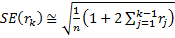
o
If we assume that the process is white noise (check the White noise standard error option), the standard
error is approximated by the square root (Box and Jenkins, [BOX]): 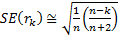
Assumptions
The time series observations are equally spaced.
Results
The report includes the overall mean, variance, and a table, showing following statistics for each lag value: autocorrelation coefficient , lower and upper confidence limits for , standard error, partial R, Box‑Ljung Q.
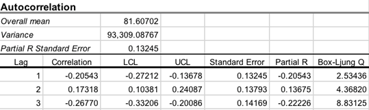
Overall mean – the mean of all observations in the time series.
Variance – the variance of the time series.
PACF (Partial R) Standard Error – the standard error of the estimated partial autocorrelation function (PACF) , calculated as .
Lags table
Correlation – kth
lag autocorrelation. For example, r1 measures the
relationship between xt and xt−1,
r2 measures the relationship between xt and xt−2,
and so on. For a discrete process with known mean and variance an estimate of the autocorrelation
may be obtained as 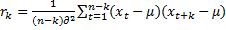
LCL, UCL are the lower and upper confidence limits for at selected alpha.
R Standard Error – standard error for .
Partial R (PACF) – estimated
partial autocorrelation .
Partial autocorrelation is the correlation between a time series and its lags
with the effects of lower order lags held constant, and so it further removes
the linear ties between the lagged series. Partial autocorrelation function
(PACF) is calculated using the Durbin-Levinson algorithm [QEN]: 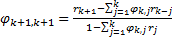
PACF can reveal the presence of the autoregressive process in the time series.
Box-Ljung
Q – a measure of autocorrelation. Box-Ljung Q statistic is chi-squared
distributed with degrees of freedom k-p-q, where p and q
are autoregressive and moving average orders, respectively. 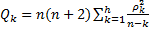
At lag k, the Box-Ljung statistic is defined as:
Correlograms
Correlograms (autocorrelation and partial autocorrelation plots) are useful for preliminary identification of an ARIMA model.
· Compare the sample correlogram to the theoretical correlogram for a stationary process.
· If the time series is stationary – the ACF declines to zero almost immediately.
· If the plot looks non-stationary, try to identify the trend and apply differencing to remove it. If the series is not seasonally adjusted, it may need special treatment.
· Positive autocorrelations are often found among the economic times series due to the persistence associated with business cycles and periods of expansionor recession.
· Moving average processes have the ACF with spikes for the first lags and the PACF shows exponential decay. The number of spikes indicates the order of the moving average.
|
ACF shows exponential decay |
Time series is stationary. Autoregressive model. |
|
Long runs of positive autocorrelations |
Apply extra differencing. |
|
ACF slowly declines, there are significant values at large lags or noteworthy spikes |
Include further moving average terms. Moving average model with a trend. |
|
Lag 1 is coming to the value of -0.5 |
Could be the result of overdifferencing. Decrease the order of differencing. Autoregressive model. |
|
The PACF correlogram has noteworthy spikes |
Include extra autoregressive terms. |
|
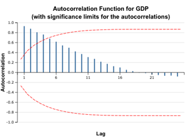 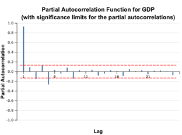 |
The correlograms show that the autocorrelation function for the GDP time series remains significant for the first five lags. Even without additional indicators, we can conclude that the given time series is non-stationary. However, later we will see that the first order differencing restores stationarity.
Example
1. Open the Time Series -
Autocorrelation dataset.
2. GDP
variable values are the Estonia gross domestic product (GDP) in millions of
euros for 2001 – 2015 years (on a quarterly basis).
3. Run the Statistics→Time Series→Autocorrelation command.
4. Select the GDP variable as time series, enter 25 (half the number of observations) as lags count. Check the Plot ACF and Plot Partial options and leave default values for other options.
Check the Difference Lag Values option and leave the Differences of order field equal to 1, to get first order differences.
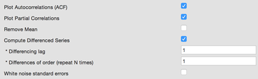
4. Run the command.
|
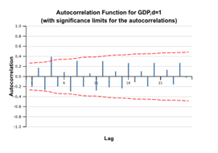 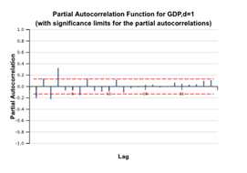 ACF and PACF plots for differenced (d=1) GDP time series
|
5. The plots above show that the ACF for the GDP remains significant and high, fluctuating about zero because the GDP has a trend due to its economic nature. As the ACF correlogram shows alternating positive and negative values (an indicator of a stationary series), we can assume that the differenced time series is stationary and use it for further modeling. The decay is not exponential, so it is recommended to run tests for stationarity.
References
[BAR] Bartlett, M. S. 1946. On the theoretical specification of sampling properties of autocorrelated time series. Journal of Royal Statistical Society, Series B, 8: 27.
[BOX] Box, G. E. P., and Jenkins, G. M. 1976. Time series analysis: Forecasting and control. San Francisco: Holden-Day.
[QEN] Time series analysis. Boston: Duxbury Press. Quenouville, M. H. 1949. Approximate tests of correlation in time series. Journal of the Royal Statistical Society, Series B, 11: 68.
[HYN] Hyndman R., Athanasopoulos G. (2014) Forecasting: principles and practice. Published by Otexts.com. Available online at otexts.com/fpp/
[ORD] Principles of Business Forecasting, Keith Ord, Robert Fildes. South-Western College Publishing, New York, NY (2012)